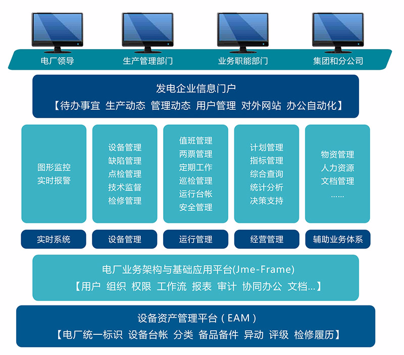

水电厂运行管理系统（以下简称“HOMS”）是在先进的设计理念和管理思想的基础上，充分结合水电企业的运行管理特点和电厂生产管理的业务需求，专门为水电企业管理者量身定做的产品，因此该系统符合湖南白竹洲水电站信息化建设要求。HOMS以发电生产、设备为核心，以工单为主线，全面覆盖水电企业生产、资产、经营、预算、决策支持等管理领域，并可将生产实时数据与管理信息有机集成，帮助水电企业及下属电厂快速有效地构建管控一体、分层管理的信息化集成平台。 项目建设内容主要包括运行值班、运行台账管理、定期工作管理、工作票管理、操作票管理、设备管理、缺陷管理、实时系统、物资管理、相关方管理、检修管理、安全管理、标准资料管理、系统管理等应用功能。
HOMS全面基于面向服务的体系架构（SOA）和N层B/S体系模式，自底向上分为基础设施层、数据层、基础应用层、业务应用层和表示层。采用分层的技术架构具有很强的扩展性、可维护性和安全性。HOMS提供对移动设备（安卓操作系统）的产品支持，即水电厂运行管理安卓客户端系统（HOMS for Android），该系统基于Android（安卓）平台设备，与HOMS系统同步的数据库，协助企业便捷高效地进行水电企业信息化管理。
